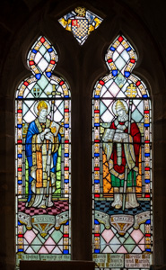
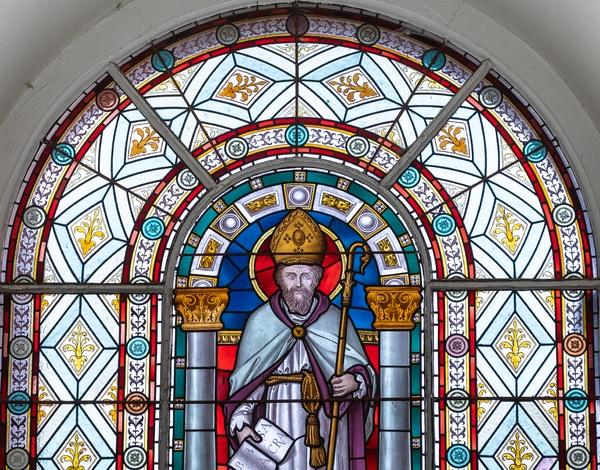
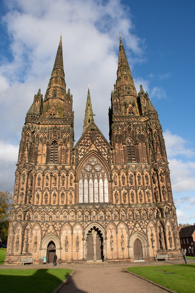
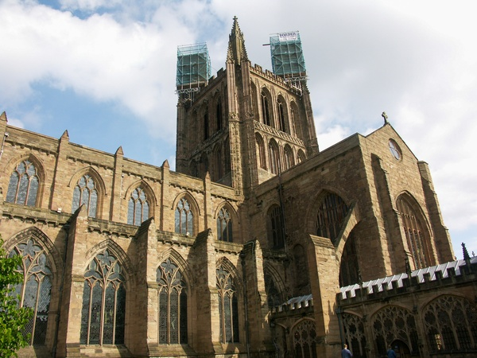
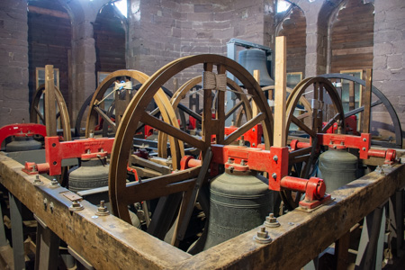
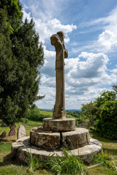
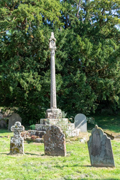
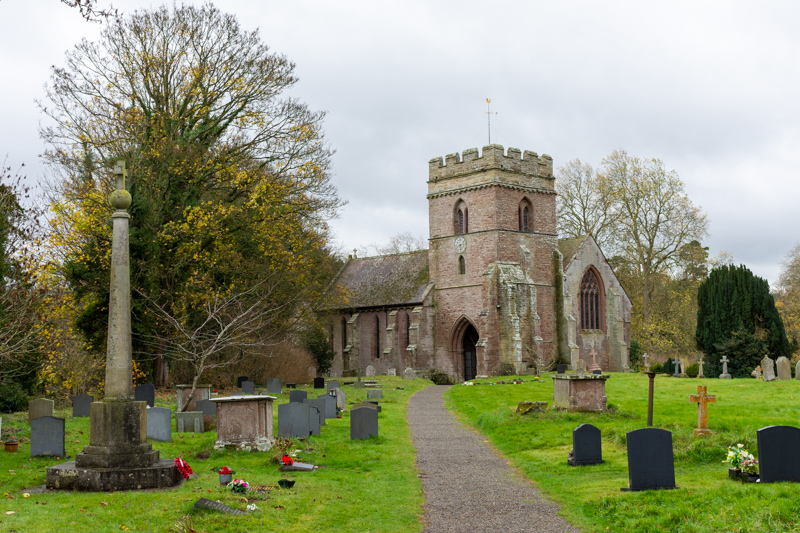

3. Early Medieval Britain - Dark Ages - Anglo-Saxon Britain (410 AD to 1066 AD)

The kingdom of Mercia is established in the 6th Century AD...the Gregorian mission arrives in Britain in the same Century, but Mercia is Christianised later than the other Anglo-Saxon kingdoms...the dioceses of Lichfield and Hereford are established...
The period immediately after the decline of Roman Britain (410 AD to c. 449 AD) is referred to as sub-Roman Britain or the Dark Ages. The Anglo-Saxons migrated to Britain from mainland north-western Europe after the Roman Empire withdrew from Britain at the beginning of the 5th century. The Anglo-Saxons then established seven kingdoms, known as the Heptarchy, in the 5th and 6th Centuries. The Anglo-Saxon kingdoms were united in 927 AD by King AEthelstan to form the Kingdom of England.
Those Britons who found themselves in the areas dominated by the Anglo-Saxons possibly embraced the Anglo-Saxons' pagan religion (teutonic heathanism) in order to aid their own self-advancement, just as they adopted other trappings of Anglo-Saxon culture. The Anglo-Saxons' religion worshipped Germanic gods like Odin, Thor, and Freyja. Anglo-Saxon paganism was not based on faith, but on rituals intended to bring benefits to individuals and the community.
Celtic Christianity
It is not entirely clear how many Britons would have been Christian when the pagan Anglo-Saxons arrived. But during this period, Christianisation intensified and evolved into Celtic Christianity after the Romans left Britain, this is because Wales, Scotland and Ireland were not taken over by the Anglo-Saxons and these areas would have seen an influx of native Britons (migrating away from the Anglo-Saxon occupied areas).
Celtic Christianity was the form of Christianity that developed between the 5th and 11th Centuries and deviated from Roman Catholic practices having a strong emphasis on monasticism and nature. While not a single, unified church, it was influenced by indigenous Celtic customs and led to practices like the development of local saints, the use of personal penance, and emphasis on monastic communities rather than bishoprics.
Christianity in Ireland
The development of Christianity was most prevalent in Ireland. There had been attempts to evangelise the Irish by Pope Celestine I in 431. However, it was St Patrick who is credited with converting the Irish en-masse.
A Christian Ireland then set about evangelising the rest of the British Isles, and Columba (an Irish abbot and missionary evangelist credited with spreading Christianity in what is today Scotland) was sent to found a religious community in Iona, off the west coast of Scotland. Then Aidan (an Irish monk and missionary credited with converting the Anglo-Saxons to Christianity in Northumbria) was sent from Iona to set up his see in Northumbria, at Lindisfarne, between 635 and 651.

Mercia
Mercia, meaning "kingdom of the border people" was one of the significant kingdoms of Anglo-Saxon Britain, it covered what is today central England.

References:
Wreocensæte
The Wreocensæte, sometimes anglicized as the Wrekinsets, were one of the peoples of Anglo-Saxon Britain. Their name approximates to "Wrekin-dwellers". The boundaries of the kingdom are uncertain, but it was substantial as the Tribal Hidage lists it as 7000 hides. The evidence suggests that the Wrekinset were the most northerly of the three large Mercian subject kingdoms facing Wales, with the Magonsæte to their south.
Reference: Wikipedia - Wreocensæte
Magonsæte
Magonsæte was a minor sub-kingdom of the greater Anglo-Saxon kingdom of Mercia, thought to be coterminous with the Diocese of Hereford.
Reference: Wikipedia - Magonsæte
596 AD: The Gregorian Mission
It was the Gregorian Mission in 596 AD that sought to convert the pagan Anglo-Saxons to Christianity.
The Gregorian mission, or Augustinian mission, was a Christian mission sent by Pope Gregory the Great in 596 to convert Britain's Anglo-Saxons. The mission was headed by Augustine of Canterbury. By the time of the death of the last missionary in 653, the mission had established Christianity among the southern Anglo-Saxons.
In the early part of the 7th Century, Christianity also spread to Northumbria, but it was the new king, Oswald (who reigned from 634 to 641/642), who did most to convert Northumbria to Christianity when he invited missionaries from the Irish monastery of Iona, who then worked to convert the kingdom.

St Gregory, Morville - Window showing St Augustine and St Gregory
Reference: Wikipedia - Gregorian Mission
599 AD: Clive and St Augustine
Circumstantial evidence, including historical records of early Christian sites, indicates that St. Augustine found "a little wooden church" when visiting the village of Clive in 599 AD, establishing it as one of the earliest Christian sites in Shropshire. While the exact origins are obscure, the site has been associated with early missionary work.
Reference: Clive Parish Council
Scrobbesbyrig
Shrewsbury originated in the 7th Century as an Anglo-Saxon settlement called "Scrobbesbyrig" and was first recorded in 901.
653 AD: Peada King of the Middle Angles
In circa 653, Peada was made king of the Middle Angles by his father Penda (Penda was king of Mercia), the Middles Angles were an important ethnic or cultural sub-kingdom within the larger kingdom Mercia. Peada then sought to marry Ealhflaed of Bernicia (the daughter of King Oswiu of Northumbria) - Oswiu made this conditional of Peada's baptism and conversion to Christianity (at the time Penda, Peada and the Middle Angles along with many other parts of Mercia were all pagan).
Peada was baptised by Finan of Lindisfarne, and this was followed by a campaign to convert Peada's people. Four priests were instructed to return with Peada and baptise his nation - Cedd, Atta, Betti and Diuma - the mission arrived in 653, the priests were to introduce the Christian faith to the region.
Reference: Wikipedia - Cedd
Peada was baptised at Repton (which is now in Derbyshire). A double abbey (a community of both monks and nuns) under an abbess was established.
Oswiu defeated and killed Penda (Peada's father and King of Mercia) on 15th Nov 655 at the Battle of Winwaed, and consequently had power in Mercia - he allowed Peada to rule the southern part of Mercia. However, Peada was murdered in 656 by his own wife whilst celebrating Easter, and so Mercia was under the control of the Northumbrian king Oswiu.
Reference: Wikipedia - Peada of Mercia
655 AD: (15th November) Penda is Killed in Battle
Penda was King of Mercia and the last great pagan warrior-king among the Anglo-Saxons. At the time of his rule Christianity was establishing itself in the other Anglo-Saxon kingdoms, but Penda held onto his Pagan beliefs. Bede wrote that Penda tolerated the preaching of Christianity in Mercia itself, despite his own beliefs.
Following Penda's death, his son Peada became king under the overlordship of Oswiu of Northumbria, this then paved the way for the Christianisation of Mercia (the last kingdom to convert).
Peada was killed six months after becoming king - it wouldn't be until 658 AD that the Mercian nobles successfully drove out Oswiu's (of Northumbria) governors, allowing Mercia to have its own king again (Wulfhere).
Reference: Wikipedia - Penda of Mercia
655 AD (after, perhaps 658?): Diuma is Consecrated as the first Bishop of Mercia and the Diocese of Mercia is Founded
Diuma was appointed by Oswiu (King of Northumbria), as the first Bishop of Mercia following the death of Penda. He was consecrated by Saint Finan (Finan of Lindisfarne, also known as Saint Finan, was an Irish monk, trained at "Iona Abbey" in Scotland, who became the second bishop of Lindisfarne from 651 until 661). It is assumed that Diuma established his see in Repton (but the exact boundaries of the bishopric are unclear). Bede claimed that he was bishop of both the Middle Angles and the Mercians.
Thus the diocese of Mercia is founded with Diuma as its first bishop.
He was an Irishman (one of the four priests Cedd, Atta, Betti and Diuma), from the Kingdom of Northumbria, who accompanied the newly baptised Peada, son of Penda (King of Mercia) back to Mercia in 653.
Reference: Wikipedia - Diuma
658 AD to 675 AD: Wulfhere of Mercia
Wulfhere was King of Mercia for this period. He was the first Christian king for the whole of Mercia. However, it is not known when or how he converted from Anglo-Saxon paganism. It has been suggested that he adopted Christianity as part of a settlement with Oswiu. Peada brought a Christian mission into Mercia, and it is possible that this was when Wulfhere became a Christian.
Wulfhere's marriage to Eormenhild of Kent (no date recorded) would have brought Mercia into close contact with the Christian kingdoms of Kent and Merovingian Gaul, which were connected by kinship and trade. The political and economic benefits of the marriage may therefore also have been a factor in Wulfhere's Christianisation of his kingdom.
Subsequent Kings of Mercia were also Christian (Wulfhere's immediate two successors even becoming monks in later life), and made grants of land to the church.
Reference: Wikipedia - Wulfhere of Mercia
664 AD: Synod of Whitby
In 7th Century Britain there were several differences between Roman and Celtic Christianity (e.g. the calculation of the date for Easter). The Synod of Whitby was convened resolve these differences, it established the Roman practices as the norm in Northumbria, and thus brought the Northumbrian church into the mainstream of Roman culture.
Reference: Wikipedia - Synod of Whitby
669 AD: Chad becomes Bishop of Mercia

St Chad, Shrewsbury - Window showing St Chad
Reference: Wikipedia - Chad of Mercia
669 AD: Seat of Diocese Moved to Lichfield
Wulfhere continued to base his rule over the Middle Angles with the royal centre at Tamworth. In 669, after the death of Jaruman (the fourth Bishop of Mercia), he requested that the archbishop of Canterbury send a new Bishop. This was Chad (brother of Cedd).
The ecclesiastical centre for the entire vast region was established in Middle Angle territory, as Wulfhere donated land a short distance away from Tamworth, at Lichfield, to allow Chad to establish a monastery. And so, in 669 the Bishop of Mercia translated his see from Repton to Lichfield, St Chad was the first Bishop of Lichfield.
Bede, the historian, first documented Lichfield in his Ecclesiastical History of the English People, describing the establishment of St. Chad's episcopal see there in 669, making it the ecclesiastical centre of the powerful Kingdom of Mercia. Bede's detailed account of St. Chad's appointment and the founding of the religious community established Lichfield's significance and established a religious heritage that continues to shape the city's identity and culture today.
Lichfield Cathedral
The Norman cathedral was built starting in 1085, but the current Gothic structure was constructed between the 1190s and the 1360s, with work paused by the Black Death. The cathedral is known as the UK's only medieval three-spired cathedra.

Lichfield Cathedral
Diocese of Lichfield
The first diocese in the kingdom of Mercia was founded in 655 as the Diocese of Mercia being renamed Diocese of Lichfield in 669. The following dioceses were then created from it Hereford (676), Lincoln (678), Leicester (680) and Worcester (680) as Lichfield was considered too vast for a single bishop to effectively rule.
From 787 to 799 it became the seat of an archbishop given authority over the dioceses of Worcester, Leicester, Lincoln, Hereford, Elmham and Dunwich.
The diocese was moved and renamed Chester in 1075 followed by Coventry in 1102. In 1228 it was renamed once more to Coventry and Lichfield then reversed to Lichfield and Coventry in 1539. In 1837 Coventry was transferred to the Diocese of Worcester.
References:
Web Site - Diocese of Lichfield
676 AD: Diocese of Hereford
The Diocese of Hereford is created, it is based on the Mercian sub-kingdom of Magonsaete. This was done because the diocese of Lichfield (Mercia) was considered too vast for one bishop to rule.
Putta was the first Bishop of Hereford.
Hereford Cathedral
The cathedral has a history stretching back to around 676 AD, beginning with a Saxon-era building that was later rebuilt in Norman style after being burnt down in 1056. The current structure, built from around 1079, blends Norman and Gothic styles and houses significant artifacts like the Mappa Mundi and a chained library.

Hereford Cathedral
References:
680 AD: Wimnicas Monastery
Merewalh, subking of Magonsaete, founded the first monastery at Wenlock between 670 and 680.
Called Wimnicas, it was a ‘dual house’ – a community of both monks and nuns. Double monasteries of this type originated in France, and were not uncommon between the 7th and 9th Centuries. At the head was an abbess, almost always of royal birth. Wenlock’s first abbess was an experienced Frankish abbess called Liobsynde, best known is Wenlock’s second abbess who was Milburga, an Anglo-Saxon princess and the daughter of Merewalh.

Much Wenlock Priory
Reference: English Heritage - Wenlock Priory
Bells
Church bells were first introduced to English churches in the 7th century, with records indicating their use in monasteries by approximately 680 AD.
A church bell in Christian architecture is a bell which is rung in a church for a variety of religious purposes, and can be heard outside the building. Traditionally they are used to call worshippers to the church for a communal service, and to announce the fixed times of daily Christian prayer, called the canonical [^1] hours, which number seven and are contained in breviaries. They are also rung on special occasions such as a wedding, or a funeral service. In some religious traditions they are used within the liturgy of the church service to signify to people that a particular part of the service has been reached. The ringing of church bells, in the Christian tradition, is also believed to drive out demons.
The traditional European church bell used in Christian churches worldwide consists of a cup-shaped metal resonator with a pivoted clapper hanging inside which strikes the sides when the bell is swung. It is hung within a steeple or belltower of a church or religious building, so the sound can reach a wide area. Such bells are either fixed in position (“hung dead”) or hung from a pivoted beam (the “headstock”) so they can swing to and fro. A rope hangs from a lever or wheel attached to the headstock, and when the bell ringer pulls on the rope the bell swings back and forth and the clapper hits the inside, sounding the bell. Bells that are hung dead are normally sounded by hitting the sound bow with a hammer or occasionally by a rope which pulls the internal clapper against the bell.
A church may have a single bell, or a collection of bells which are tuned to a common scale. They may be stationary and chimed, rung randomly by swinging through a small arc, or swung through a full circle to enable the high degree of control of English change ringing.
Before modern communications, church bells were a common way to call the community together for all purposes, both sacred and secular.

St Laurence, Ludlow - Bells
[^1]: In the practice of Christianity, canonical hours mark the divisions of the day in terms of fixed times of prayer at regular intervals. A book of hours (The book of hours is a Christian devotional book popular in the Middle Ages. It is the most common type of surviving medieval illuminated manuscript. Like every manuscript, each manuscript book of hours is unique in one way or another, but most contain a similar collection of texts, prayers and psalms, often with appropriate decorations, for Christian devotion.), chiefly a breviary (A breviary (Latin: breviarium) is a liturgical book used in Christianity for praying the canonical hours, usually recited at seven fixed prayer times.), normally contains a version of, or selection from, such prayers. In Anglicanism, they are often known as the daily or divine office, to distinguish them from the other ‘offices’ of the Church (holy communion, baptism, etc.), which are commonly observed weekly or less often.
7th Century AD: St Chad’s Church
Old St Chad's is founded. ==(Check date?)== It is known that by the reign of King Offa of Mercia (757-96 AD) there was a monastic college on the site.

St Chad, Shrewsbury
731 AD: Bede completes Ecclesiastical History of the English People
The Ecclesiastical History of the English People (Latin: Historia ecclesiastica gentis Anglorum), written by Bede in about AD 731, is a history of the Christian Churches in England, and of England generally.
Bede apparently had no informant at any of the main Mercian religious houses. His information about Mercia came from Lastingham, now in North Yorkshire, and from Lindsey, a province on the borders of Northumbria and Mercia. As a result, there are noticeable gaps in his coverage of Mercian church history, such as his omission of the division of the huge Mercian diocese by Theodore (Archbishop of Canterbury) in the late 7th century.
References:
Wikipedia - Ecclesiastical History of the English People
Project Gutenberg - eBook of Bede's Ecclesiastical History of England
757 AD to 796 AD: Offa of Mercia
Offa, King of Mercia, seemed to resent his own bishops paying allegiance to the Archbishop of Canterbury in Kent who, while under Offa's control, was not of his own kingdom of Mercia. (In 764, Offa had gained supremacy over Kent and ruled it through client kings. By the early 770s, it appears that Offa was attempting to rule Kent directly.)
Offa therefore created his own archbishopric in Lichfield, who presided over all the bishops from the Humber to the Thames, in 786, with the consent of Pope Adrian I. Lichfield was therefore briefly the seat of an archbishop (Hygeberht) from 787 to 799 (officially dissolved in 803) during the ascendancy of the kingdom of Mercia. Thus the archdiocese of Lichfield became a third archdiocese of the English church, the other two being Canterbury and York. The Archbishopric of Lichfield only lasted for 16 years, ending after Offa's death, when at the Fifth Council of Clovesho its dioceses were restored to Æthelhard, Archbishop of Canterbury by Pope Leo III.
Viking invasion of England
The Vikings who invaded Britain in 865 AD were also pagan, but they were accepting of Christianity as conversion to the religion of the British people was seen as a way to better integrate.
Anglo-Saxon Chronicle
In the late 9th Century AD - the Anglo-Saxon Chronicle is created, it is a collection of annals in Old English, chronicling the history of the Anglo-Saxons. The original manuscript of the Chronicle was created late in the ninth century, probably in Wessex, during the reign of Alfred the Great (871–899). Its content is known as the "Common Stock" of the Chronicle. Multiple copies were made of that one original and then distributed to monasteries across England, where they were updated, partly independently. These manuscripts collectively are known as the Anglo-Saxon Chronicle. Almost all of the material in the Chronicle is in the form of annals, by year; the earliest is dated at 60 BC (the annals' date for Caesar's invasions of Britain). In one case, the Chronicle was still being actively updated in 1154.
Reference: Wikipedia - Anglo-Saxon Chronicle
9th or 10th Century AD: Preaching Crosses
Stone crosses were erected widely across the British Isles to reinforce the Christian faith, with many early examples originating during the 9th to 10th centuries. These often acted as early Christian markers in the absence of a church building.

St Peter, Coreley - Preaching Cross

St Mary, Bitterley - Preaching Cross
10th Century AD: The Lichfield Gospels
The Lichfield Gospels (also known as the St Chad Gospels, the Book of Chad, the Llandeilo Gospels, the St Teilo Gospels and variations of these) comes into the possession of Lichfield Cathedral.
Reference: Wikipedia - Lichfield Gospels
Shrewsbury's first Mention
The earliest written mention of Shrewsbury existing is from the year 901 AD, when it was described as being a city (‘in civitate Scrobensis’)
912 AD: St Alkmund’s Church
St Alkmund's church is founded by Aethelfleda, Lady of the Mercians and daughter of Alfred the Great. By the time of Domesday survey, the church was substantially endowed. However, when Lilleshall Abbey was established in 1148 AD, the church became a poor vicarage as property was transferred to Lilleshall. The 10th Century building no longer survives, the present building dates from 1475 AD (tower and spire) and 1794-5 AD.

St Alkmund, Shrewsbury
Kingdom of England
In 927 AD King Æthelstan completes the unification of the various Anglo-Saxon and Viking kingdoms, becoming the first true King of England
970 AD: St Mary’s Church
Thought to be one of the oldest extant churches in Shropshire, St Mary’s in Shrewsbury is founded in 970 by King Edgar (there is belief that an earlier church existed on the site). The church was a Royal Peculiar, under the jurisdiction of the king rather than the diocese.

St Mary, Shrewsbury
The Millennium
There was a widespread belief that the world would end in the year 1000 AD, this comes from various religious prophecies, particularly Christian interpretations of Revelation's "Millennium" (the Book of Revelation also known as the Book of the Apocalypse is the last book of the New Testament), a symbolic or literal thousand-year reign of Christ, followed by judgment and a new creation, but not necessarily an immediate end.
Reference: Wikipedia - Book of Revelation
Scrobbesbyrigscir's first Mention
The first mention of "Shropshire" in the Anglo-Saxon Chronicle occurs under 1006 - this is when the King crossed the Thames and wintered in the area of Shropshire - Scrobbesbyrigscir (shire with Shrewsbury as its head).
(before) 1061 AD: Bromfield Priory
Bromfield Priory was a college of secular canons, founded sometime before 1061.

St Mary the Virgin, Bromfield

Church Building - Anglo-Saxon
Early Anglo-Saxon buildings in Britain were generally simple, constructed mainly using timber with thatch for roofing. The use of stone for church construction by the Anglo-Saxons was unusual before c. 950 AD; stone was used for cathedrals and monasteries, however. Thus many Anglo-Saxon churches were made of wood and so no longer survive; they were generally replaced with stone constructions after the Norman conquest of Britain.
However, some places of worship were built in stone, these were often 'minster' - or monastic - churches that have over time become parish churches. Anglo-Saxon churches had a simple plan comprising a rectangular nave adjoining a rectangular chancel.
The Anglo-Saxons were not great stonemasons, they applied the same techniques used for wood construction to stone. For example, Anglo-Saxon windows are very distinctive, a triangular-headed one is likely to be Anglo-Saxon work (it is thought that the design worked well in wood, so the masons were in effect using planks of stone). Other windows have round heads and can often be distinguished from Norman windows by disproportionately large surrounding stones. Or they may have crude little turned pillars or 'balusters' (1) either side.
Anglo-Saxon churches are characterised by:
- semi-circular arches over doors and windows or triangular-headed doorways and windows
- tall and narrow doorways
- windows that have small external openings but are deeply splayed through to the inside
- walls that are no more than 90cm thick
- strip-work on wall surfaces
- herringbone style stonework can be found in the late Saxon/early Norman buildings
- long-and-short quoins (2) (large, tall upright stones alternating with broad flat stones)
Christian churches have been present in Shropshire since the Anglo-Saxon era, an unknown number were built during this time. Very few surviving churches have retained Saxon features, the best example being St Giles, Barrow - founded on the estates of one of England's earliest monasteries, Wenlock Abbey (later Priory), probably in the 8th Century it was used as a small stone oratory, or 'cell', for solitary prayer.
The earliest parts of St Andrew, Wroxeter, are Anglo-Saxon but the precise date of its foundation is uncertain (thought to be 5th or 6th Century - the north wall has been dated to the 7th or 8th century).
Another example of a church from this period is St Peter, Diddlebury - it is one of about 20 churches in Shropshire mentioned in the Domesday book and therefore of known Saxon origin.
Finally, St Peter, Stanton Lacy is another example of a church built prior to the Norman conquest of Britain.
1: The term ‘baluster shaft’ is given to the shaft dividing a window in Anglo-Saxon architecture.
2: A quoin is both the external angle or corner of a building and, more often, one of the stones used to form that angle. These cornerstones are both decorative and structural, since they usually differ in jointing, colour, texture, or size from the masonry of the adjoining walls.

St Giles, Barrow

St Andrew, Wroxeter

St Peter, Diddlebury

St Peter, Stanton Lacy
NEXT: Medieval Britain - Norman Britain (1066 AD to 1154 AD)

Reference Material